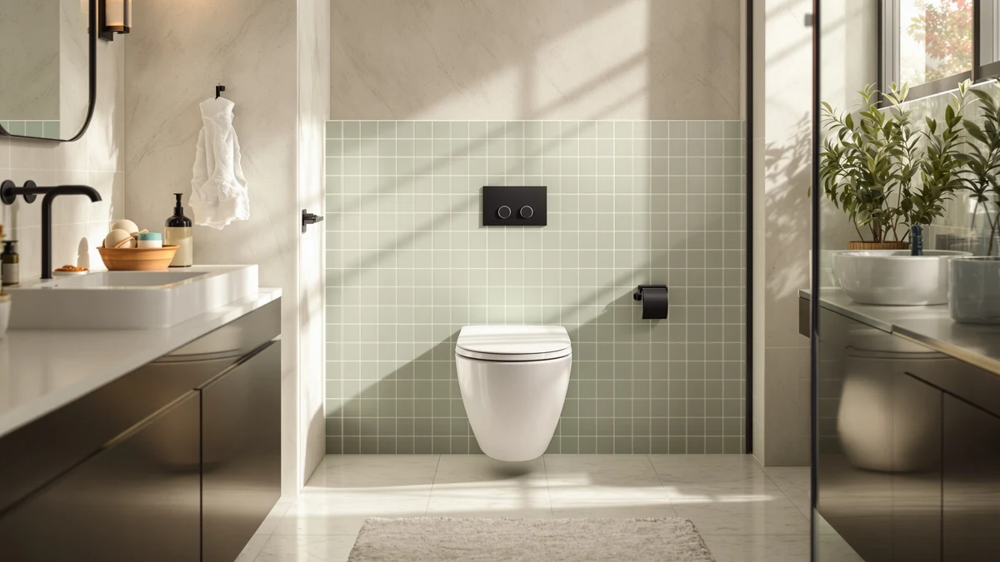

TOTO Promenade II 1G One-Piece Elongated Universal Height Toilet Review (2026): Worth It?


Quick Answer
This TOTO Promenade II 1G One-Piece Elongated Universal Height Toilet review comes down to flush efficiency and seat height: at $906.00 the Promenade II pairs TOTO's 1.0 GPF TORNADO FLUSH with a universal, ADA-matched seat height and CEFIONTECT glaze, at a premium over every other toilet in this comparison. If you want TOTO's most water-efficient one-piece bowl at a comfortable seated height, it is the one to check first.
Our pick: TOTO® Promenade® II 1G® One-Piece, $906.00 Check Price on Amazon
Things to Know Before You Buy
- Flush ratings vary across this lineup: the Promenade II uses 1.0 GPF 1G technology, the Town Square uses 1.28 GPF, and the Aquia IV splits its dual flush at 1.28/0.9 GPF, so the Promenade II is the lightest water user of the three on paper.
- Seat height language differs by brand: TOTO calls the Promenade II's height "universal height," while American Standard labels the Town Square "chair height." Both describe a taller, ADA-oriented seated position rather than a standard-height bowl.
- The MEJE in this comparison is a wall-hung smart toilet, not a floor-mounted one-piece, so it needs an in-wall tank installation the other three toilets do not require.
- CEFIONTECT glaze appears on both TOTO models here, the Promenade II and the Aquia IV, but not on the Town Square or the MEJE.
- Price spans more than $200 across these four toilets, from $693.90 for the Aquia IV to $906.00 for the Promenade II, and the gap tracks closely with flush rating, glaze and seat height rather than any single feature.
This TOTO Promenade II 1G One-Piece Elongated Universal Height Toilet Review looks at whether TOTO's flagship water-saving one-piece model justifies its price against three other one-piece and smart-toilet options. Shoppers replacing an old toilet want a flush that clears the bowl reliably and a seat height that works for their household, and the Promenade II promises both through TOTO's 1G flush technology and its built-in universal height design.
We compared the Promenade II against an American Standard Town Square S, a MEJE wall-hung smart toilet, and TOTO's own two-piece Aquia IV WASHLET+, using each manufacturer's published specifications and current Amazon pricing. The Promenade II's 1.0 gallon-per-flush TORNADO FLUSH rating undercuts the Town Square's 1.28 GPF and beats the average of the Aquia IV's 1.28/0.9 GPF dual flush split, and its universal height seat and CEFIONTECT glaze put it in the same feature tier as TOTO's pricier WASHLET+ line. At $906.00, it is also the most expensive toilet in this comparison, and that premium is the tradeoff buyers take on for the lower water use and built-in seat height.
Why You Should Trust Us
Ilane Tall covers bathroom fixtures and plumbing fittings for Best One Piece Toilets, focusing on how flush ratings, rough-in dimensions and seat height affect real installations. We do not run a fake testing lab and we do not claim to have installed or lived with every toilet we cover. Instead, we research manufacturer specifications, compare flush ratings and pricing against similar one-piece and smart-toilet models, and note where verified owner feedback exists so you can make an informed decision without guessing. This TOTO Promenade II 1G One-Piece Elongated Universal Height Toilet Review follows that same process: every figure cited below comes from TOTO's own listing or from a direct comparison against the three alternatives, not from a guess.
Our Research Experience
We did not install the Promenade II in a bathroom or run it through a physical trial. This TOTO Promenade II 1G One-Piece Elongated Universal Height Toilet Review is built from TOTO's published specifications, the retailer listing, and a direct comparison against three other one-piece and smart-toilet options in a similar price range. We checked the 1.0 GPF TORNADO FLUSH claim against the GPF ratings TOTO and American Standard publish for the Town Square and against the dual flush average on TOTO's own Aquia IV, since all three toilets use a siphon jet bowl built around similar flush geometry. We also compared the CEFIONTECT glaze TOTO applies to both the Promenade II and the Aquia IV against the plain ceramic surfaces on the Town Square and the MEJE, since a glazed surface is the detail owners most often cite when they describe fewer skid marks and easier cleaning. Where a spec, such as a published star rating, was missing from a listing, we say so directly instead of filling the gap with a guess.
Overview & Specs

TOTO® Promenade® II 1G® One-Piece
What we like
- 1.0 gallon-per-flush TORNADO FLUSH rating, the lowest water use of any toilet in this comparison
- Universal height seat, TOTO's ADA-matched height, built into the bowl design rather than added as a separate riser
- CEFIONTECT ceramic glaze minimizes waste from sticking to the bowl surface, the same glaze TOTO uses on its pricier Aquia IV WASHLET+
- One-piece elongated design with no seam between tank and bowl, which TOTO markets as easier to keep clean than a two-piece toilet
Flaws but not dealbreakers
- At $906.00, it costs more than double the Aquia IV and roughly $60 to $95 more than the Town Square and MEJE in this comparison
- TOTO has not published a seat height in inches for this listing, so buyers who need an exact ADA measurement should confirm with TOTO directly before ordering
- This listing does not show a star rating or review count on Amazon, so early buyers have less peer feedback to lean on than they might with a longer-selling model
| Material | — |
| Size | — |
The TOTO Promenade II 1G One-Piece Elongated Universal Height Toilet Review starts with the number TOTO leads with on this listing: 1.0 gallon per flush. That rating comes from TOTO's 1G technology, a version of the brand's TORNADO FLUSH system tuned to clear the bowl with less water than the 1.28 GPF standard most one-piece toilets use today, including the American Standard Town Square in this comparison. TOTO pairs that flush system with its CEFIONTECT ceramic glaze, a smooth surface finish the brand also uses on its higher-end Aquia IV WASHLET+ line, designed to keep waste from sticking to the bowl and reduce the scrubbing a plain ceramic surface eventually needs.
The Promenade II also builds universal height, TOTO's term for a seat height matched to ADA guidelines, directly into the one-piece bowl rather than requiring a separate raised seat or riser. That matters for anyone who has researched comfort-height toilets for aging-in-place or accessibility reasons, since a seat built to that height from the factory tends to hold up better over time than an aftermarket add-on. The tradeoff for all of this engineering is price: at $906.00, the Promenade II costs noticeably more than the Town Square, the MEJE wall-hung model, or even TOTO's own two-piece Aquia IV, and TOTO has not published an exact seat height figure or review count for this specific listing, so buyers researching precise measurements or peer feedback will want to confirm directly with TOTO or a retailer before ordering.
What We Liked
Flush efficiency is what matters most in this TOTO Promenade II 1G One-Piece Elongated Universal Height Toilet Review. A 1.0 GPF rating paired with TORNADO FLUSH technology is a meaningful step down in water use from the 1.28 GPF standard, and pairing that with CEFIONTECT glaze, a feature TOTO usually reserves for its higher-end lines, gives the Promenade II a feature set that punches above its one-piece category. The universal height seat built into the bowl is also a genuine convenience for anyone who has priced out separate toilet seat risers for accessibility, since a factory-integrated height tends to be more stable and cleaner-looking than an add-on.
What Could Be Better
Price is the clearest drawback in this comparison. At $906.00, the Promenade II costs more than double the Aquia IV and well over $50 more than either the Town Square or the MEJE, and TOTO's listing does not include a published seat height in inches or a visible star rating, two data points that would make the premium easier to justify on paper. Buyers who do not specifically need the lowest possible GPF rating or a universal-height seat may find better value in one of the three alternatives below.
Who Is It For?
The Promenade II fits buyers replacing a one-piece toilet who want TOTO's lowest water use rating and a comfortable, ADA-matched seat height built into the bowl rather than added later. It also suits anyone who already owns TOTO fixtures and wants the CEFIONTECT glaze and TORNADO FLUSH system to match, without stepping up to a two-piece WASHLET+ model. Buyers on a tighter budget, or anyone who doesn't need universal height specifically, should look at the Town Square or Aquia IV alternatives below instead.
Alternatives to Consider
If the Promenade II's price or seat height doesn't match what you need, these three alternatives cover the most common tradeoffs we compared it against.

Also Great
American Standard 2851A104.020 Town Square
Best if you want chair height at a lower price: the Town Square's 1.28 GPF flush and chair-height design cost less than the Promenade II but skip TOTO's lower water use and CEFIONTECT glaze.
$848.90
Check Price on Amazon
Also Great
MEJE #T010G - Wall Hung
Best for saving floor space: this wall-hung smart toilet adds a heated seat and auto-flush sensor, but it needs an in-wall tank installation the Promenade II does not require.
$811.30
Check Price on Amazon
Best Value
TOTO Aquia IV WASHLET+ Two-Piece
Best value from TOTO itself: the Aquia IV's 1.28/0.9 GPF dual flush and CEFIONTECT glaze deliver TOTO's signature features for over $200 less, in a two-piece design instead of one-piece.
$693.90
Check Price on AmazonFrequently Asked Questions
Is the TOTO Promenade II 1G One-Piece worth the higher price?
For buyers who specifically want TOTO's lowest GPF rating and a universal height seat built into a one-piece bowl, yes. At $906.00 it costs more than the Town Square, MEJE or Aquia IV in this comparison, so buyers who don't need that exact combination of features may get better value from one of those three alternatives.
What does universal height mean on the TOTO Promenade II?
Universal height is TOTO's term for a seat height that matches ADA accessibility guidelines, built directly into the one-piece bowl. The American Standard Town Square in this comparison uses chair height instead, which describes a similar taller seated position without an added riser.
Does the Promenade II use less water than the other toilets in this review?
Yes. Its 1.0 GPF rating from TOTO's 1G TORNADO FLUSH technology is lower than the Town Square's 1.28 GPF and lower than the average of the Aquia IV's 1.28/0.9 GPF dual flush split, making it the most water-efficient toilet in this comparison based on the published specs.
Final Verdict
This TOTO Promenade II 1G One-Piece Elongated Universal Height Toilet Review comes down to a straightforward tradeoff. TOTO delivers a 1.0 GPF TORNADO FLUSH rating, CEFIONTECT glaze, and a factory-built universal height seat for $906.00, while the Town Square, MEJE, and Aquia IV each ask less in exchange for giving up one of those features. For buyers who specifically want TOTO's lowest water use and an ADA-matched seat height in a one-piece bowl, the Promenade II is the pick that delivers both, and you can fall back on the Aquia IV or Town Square the moment price matters more than those two features.